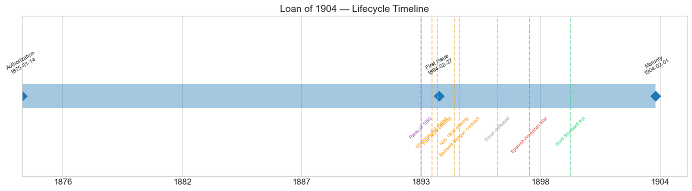
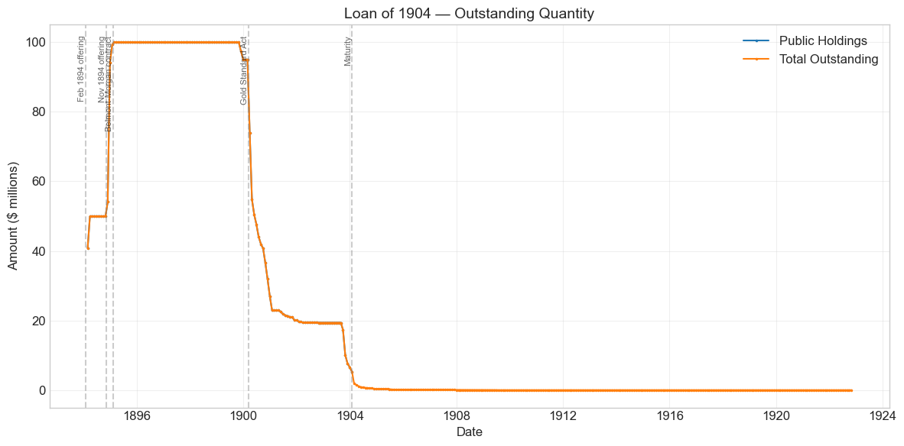
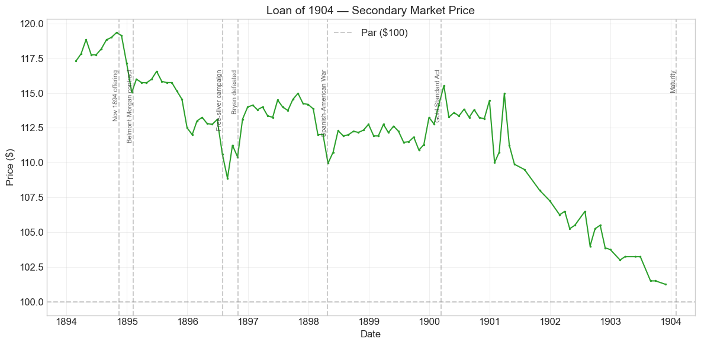
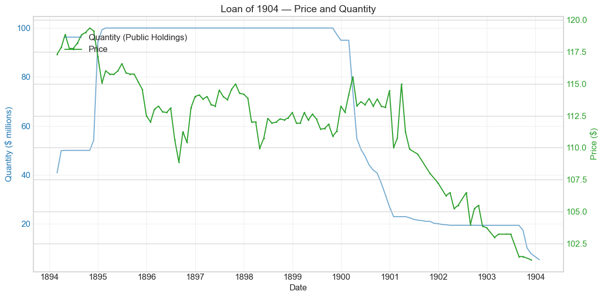
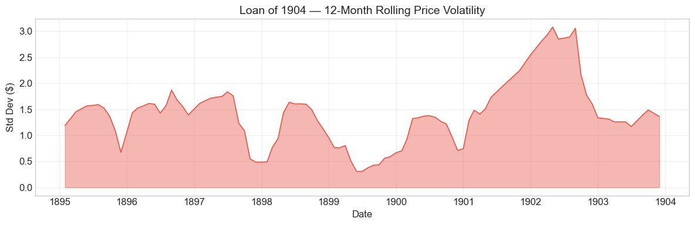

Bond Biography: Loan of 1904#
The Bonds That Could Not Hold the Gold#
An enhanced chapter from the Hall-Payne-Sargent US Federal Bond Database (2,857 issues, 1776–1960)
Bond ID (L1): 20128 | Category: Interest Bearing > Marketable > Long Term Bond
import pandas as pd
import numpy as np
import matplotlib.pyplot as plt
import matplotlib.patches as mpatches
import datetime
import warnings
warnings.filterwarnings('ignore')
plt.style.use('seaborn-v0_8-whitegrid')
plt.rcParams.update({'figure.figsize': (12, 6), 'font.size': 12,
'axes.titlesize': 14, 'axes.labelsize': 12})
# Load the bond database
store = pd.HDFStore('../data/BondDF.h5', mode='r')
BondList = store['BondList']
BondQuant = store['BondQuant']
BondPrice = store['BondPrice']
store.close()
BondQuant_T = BondQuant.transpose()
BondPrice_T = BondPrice.transpose()
bond_id = 20128
print(f'Loaded data for: Loan of 1904 (ID: 20128)')
/Users/thomassargent/anaconda3/lib/python3.9/site-packages/pandas/core/arrays/masked.py:60: UserWarning: Pandas requires version '1.3.6' or newer of 'bottleneck' (version '1.3.5' currently installed).
from pandas.core import (
Loaded data for: Loan of 1904 (ID: 20128)
Overview: The First Gold-Defense Loan#
The Loan of 1904 — the 5 percent ten-year bonds of February and November 1894 — was the opening move in the strangest borrowing campaign in the history of the federal debt: the Cleveland administration’s four bond sales of 1894–96, undertaken not to fight a war or fund a deficit as such, but to buy gold for a Treasury reserve that was draining away through the doors of the New York Subtreasury. This bond is the prequel to the story told in this database’s chapter on the Loan of 1925 (Bond 20129): the two public offerings of 1894 traced here each replenished the gold reserve for a few months and each failed to hold it, and it was precisely that double failure that drove the Treasury, in February 1895, into the notorious contract with the Belmont–Morgan syndicate.
The legal authority was a Reconstruction-era remnant. The Resumption Act of January 14, 1875 empowered the Secretary of the Treasury to sell bonds of the descriptions created by the Refunding Act of 1870 in order “to maintain such redemption” — that is, to defend the convertibility of the greenbacks into coin. With Congress deadlocked between gold and silver men and unwilling to grant any new borrowing authority, this dormant clause was the only borrowing power President Cleveland and Secretary of the Treasury John G. Carlisle possessed. Under it they sold $50 million of ten-year 5 percent “coin” bonds in February 1894 and another $50 million on essentially the same terms in November 1894 — both by public subscription, both taken in the end largely by New York banks, and both at prices around 117, which put the loan on roughly a 3 percent basis. That last figure deserves a moment’s astonishment: in the depths of the worst depression the country had yet known, with the Treasury’s ability to stay on gold in genuine doubt, the United States could still borrow ten-year money at about 3 percent. The market’s fear was never that the government would fail to pay; it was about what money it would pay in.
The bond’s later life was quieter than its birth. After the silver question was settled — Bryan’s defeat in 1896, the Gold Standard Act of 1900 — roughly three-quarters of the loan was voluntarily exchanged into the new 2 percent Consols of 1930 (the receiving side of that operation is told in the chapter on Bond 20131), and the remainder was paid off at and just before the February 1, 1904 maturity. During its lifetime on the secondary market the bond’s average price was $112.07, ranging from $101.25 to $119.35 across 108 monthly observations (February 1894 to November 1903); peak outstanding reached $100.00 million in February 1895.
Historical Context: The Panic of 1893 and the Drain That Would Not Stop#
The following major events framed this bond’s lifetime:
Date |
Event |
Category |
|---|---|---|
1893-05 to 1897 |
Panic of 1893 and depression |
Crisis |
1893-11-01 |
Repeal of the Sherman Silver Purchase Act |
Monetary |
1894-01/02 |
First $50M offering of the 5s of 1904 |
Fiscal |
1894-11 |
Second $50M offering |
Fiscal |
1895-02-08 |
Belmont–Morgan syndicate contract (see Bond 20129) |
Fiscal |
1896-11-03 |
McKinley defeats Bryan |
Political |
1898-04-25 to 1898-08-12 |
Spanish-American War |
War |
1900-03-14 |
Gold Standard Act; conversion into 2% Consols |
Legislation |
1904-02-01 |
Maturity; loan paid off |
Fiscal |
1893: panic, repeal, and a reserve below the line#
The crisis that created this bond began as a monetary one. Under the Sherman Silver Purchase Act of 1890 the Treasury bought 4.5 million ounces of silver a month, paying with new Treasury notes redeemable in “coin” — in practice, gold. These notes joined the $346 million of Civil War greenbacks as paper claims on the Treasury’s gold, and as silver agitation grew, holders at home and abroad increasingly preferred to hold the gold rather than the claim. The reserve of roughly $100 million in gold that had stood behind resumption since 1879 — never a legal requirement, but universally treated as the safeguard of the whole structure — fell below that line in April 1893 for the first time. Weeks later the Panic of 1893 broke: hundreds of banks suspended, credit froze, and the country slid into a depression that would last four years. President Cleveland called Congress into special session and, on November 1, 1893, won repeal of the silver-purchase clauses of the Sherman Act.
Repeal stopped the creation of new silver obligations. It did nothing about the stock already outstanding, and it could not repair the mechanism contemporaries called the endless chain: the law required redeemed greenbacks to be reissued, not retired, so a holder could present notes for gold, the notes would flow back into circulation through government disbursements, and the same paper would return to draw out more gold. With the depression gutting tariff revenue, the Treasury was running a deficit and paying its ordinary bills partly in the very notes that came back for redemption. By January 1894 the gold reserve had fallen to roughly $65 million, and the administration — having asked Congress in vain for authority to sell bonds payable explicitly in gold — reached for the only statute available.
February 1894: the first offering#
On January 17, 1894, Secretary Carlisle announced a public offering of $50 million of ten-year 5 percent bonds under the Resumption Act, payment to be made in gold coin, with a minimum price of about 117.223 — the price at which a 5 percent ten-year bond yields roughly 3 percent. The offering was greeted with skepticism: the bond was payable in ambiguous “coin,” a silverite Congress was in session, and much of the country’s banking capital was still nursing the wounds of the panic. Subscriptions lagged badly until the final days, when — after direct appeals by the Treasury — the New York banks came in and took the great bulk of the loan. The sale realized approximately $58.7 million in gold, and the reserve rose back above the $100 million line.
It did not stay there. The flaw in the operation was visible almost immediately, and it was structural: subscribers needed gold to pay for the bonds, and the cheapest place to get gold was the Treasury itself. Legal-tender notes went in one window and drew out gold that went right back in another window as bond payments — the endless chain now running through the loan meant to break it. Gold continued to leave for Europe as well, and by the autumn of 1894 the reserve had sunk back toward $60 million.
November 1894: the second offering#
In November 1894 the Treasury repeated the operation: another $50 million of the same ten-year 5s, again by public advertisement. This time the pretense of a broad public subscription was thinner still — the loan was taken almost entirely by a syndicate of New York City banks, again at a price around 117, realizing roughly $58.5 million in gold. And this time the relief was briefer: the drain resumed within weeks, faster than before, aggravated by renewed gold exports. By late January 1895 withdrawals were running at millions of dollars a day and the reserve was falling toward $40 million — weeks, perhaps days, from the point at which the Treasury could no longer redeem in gold.
The lesson of 1894 was that public bond sales for gold, conducted through the ordinary channels, could not defend the reserve, because they did nothing to stop the redemptions and nothing to hold the foreign exchanges. What was needed — and what the Belmont–Morgan contract of February 8, 1895 was designed to supply — was gold from abroad, delivered by a syndicate that would also undertake to protect the Treasury against withdrawals while the operation ran. That extraordinary bargain, the 4 percent thirty-year bonds it created, the political firestorm it ignited, and the popular loan of January 1896 that answered it, are the subject of the companion chapter on the Loan of 1925 (Bond 20129). In all, the four sales of 1894–96 raised about $262 million of bonds to hold a $100 million reserve; the two $50 million sales of the 5s of 1904 were the demonstration, expensive but conclusive, that half-measures would not serve.
The later life: silver scare, war scare, and the settlement of 1900#
Once the 1895–96 crisis passed to its successor bonds, the 5s of 1904 settled into the role their price series documents below: a seasoned premium bond registering the era’s news. The free-silver campaign of 1896 — Bryan nominated on the “Cross of Gold” speech in July — marks the price’s sharpest sag, to $108.87 in August 1896: a 5 percent “coin” bond had perhaps eight years of payments exposed to a silver victory, and the market discounted accordingly, though far more mildly than it discounted the thirty-year 4s of 1925. McKinley’s victory on November 3, 1896 restored the premium within weeks. The Spanish-American War put a visible but modest dent in the price in April 1898 (the war itself was financed by the popular 3 percent Ten-Twenty loan — see Bond 20130). Finally the Gold Standard Act of March 14, 1900 transformed the bond’s remaining life: Section 11 invited holders to exchange the 5s of 1904, 4s of 1907, and 3s of 1908 for new thirty-year 2 percent gold consols at premium-compensating valuations, and within a year roughly three-quarters of this loan had been surrendered — after which the rump ran quietly down its glide path to par and was paid off at the February 1904 maturity.
# Bond Lifecycle Timeline
fig, ax = plt.subplots(figsize=(14, 4))
# Key dates
dates = [('Authorization', '1875-01-14'), ('First Issue', '1894-02-27'), ('Maturity', '1904-02-01')]
events = [('Panic of 1893', '1893-05-05', 'crisis'), ('Sherman Act repeal', '1893-11-01', 'monetary'), ('Feb 1894 offering', '1894-02-01', 'monetary'), ('Nov 1894 offering', '1894-11-15', 'monetary'), ('Belmont-Morgan contract', '1895-02-08', 'monetary'), ('Bryan defeated', '1896-11-03', 'other'), ('Spanish-American War', '1898-04-25', 'war'), ('Gold Standard Act', '1900-03-14', 'legislation')]
import matplotlib.dates as mdates
from datetime import datetime
# Plot bond lifetime bar
d0 = datetime.strptime(dates[0][1], '%Y-%m-%d')
d1 = datetime.strptime(dates[-1][1], '%Y-%m-%d')
ax.barh(0, (d1 - d0).days, left=mdates.date2num(d0), height=0.3,
color='#1f77b4', alpha=0.4, label='Bond Lifetime')
# Mark key dates
for label, date_str in dates:
d = datetime.strptime(date_str, '%Y-%m-%d')
ax.plot(mdates.date2num(d), 0, 'D', color='#1f77b4', markersize=10)
ax.annotate(f'{label}\n{date_str}', (mdates.date2num(d), 0.25),
ha='center', va='bottom', fontsize=8, rotation=30)
# Mark historical events
colors = {'war': '#e74c3c', 'crisis': '#9b59b6', 'legislation': '#2ecc71', 'other': '#95a5a6', 'monetary': '#f39c12'}
for name, date_str, cat in events:
d = datetime.strptime(date_str, '%Y-%m-%d')
ax.axvline(mdates.date2num(d), color=colors.get(cat, 'gray'), alpha=0.5, linestyle='--')
ax.annotate(name, (mdates.date2num(d), -0.25), ha='center', va='top',
fontsize=7, rotation=45, color=colors.get(cat, 'gray'))
ax.set_yticks([])
ax.xaxis.set_major_formatter(mdates.DateFormatter('%Y'))
ax.set_title('Loan of 1904 — Lifecycle Timeline')
ax.set_ylim(-1, 1)
plt.tight_layout()
plt.show()

Bond Features#
Feature |
Detail |
|---|---|
Name |
Loan of 1904 (“5s of 1904”) |
Authorizing Act |
Resumption Act of January 14, 1875 (bond descriptions of the Refunding Act of 1870) |
First Issue Date |
February 27, 1894 |
Term |
10 years, maturing February 1, 1904 |
Coupon Rate |
5.0% |
Payment Frequency |
Quarterly (4 times/year) |
Callable |
No — a fixed-maturity bond |
Payable in Coin |
Yes — “coin,” the ambiguous formula of 1870, not explicitly gold |
Placements |
Two $50M public offerings: February 1894 and November 1894, both around 117 (≈3% basis), paid for in gold coin |
Peak Outstanding |
$100.00 million (February 28, 1895) |
Price Sold (database) |
1.0 (par of face; see note below) |
Conversion Privilege |
Exchangeable into 2% Consols of 1930 under Section 11 of the Gold Standard Act (1900) |
Special Privilege |
Eligible as security for national bank note circulation (pre-1900 terms, 1% circulation tax) |
Two details deserve emphasis. First, the database’s recorded sale price of 1.0 reflects the face-value accounting of the issue; the two public sales in fact realized prices around 117 — the Treasury set its minimum on roughly a 3 percent yield basis, and the roughly $117 million of gold the two sales brought in against $100 million of face value is the difference. Second, the bond was not callable, but its 1900 conversion privilege accomplished what a call would have: it let the Treasury retire most of a 5 percent obligation early, once the gold settlement made 2 percent money attainable.
# Display full bond features from database
row = BondList.loc[20128]
display_cols = [
"Treasury's Name Of Issue", 'Authorizing Act', 'Term Of Loan',
'First Issue Date', 'First Redemption Date', 'Final Redemption Date',
'Coupon Rate', 'Coupons Per Year', 'Callable', 'Coin',
'Authorized Amount', 'Price Sold'
]
print('Bond Features from Database:')
print('=' * 55)
for col in display_cols:
if col in row.index:
print(f' {col:<30} {row[col]}')
Bond Features from Database:
=======================================================
Treasury's Name Of Issue Loan of 1904
Authorizing Act January 14, 1875
Term Of Loan 10 years
First Issue Date 1894-02-27 00:00:00
First Redemption Date NaT
Final Redemption Date NaT
Coupon Rate 5.0
Coupons Per Year 4.0
Callable 0.0
Coin 1.0
Authorized Amount nan
Price Sold 1.0
Bond Quantity Over Time#
The bond’s outstanding quantity peaked at $100.00 million on February 28, 1895 — the sum of the two $50 million offerings of February and November 1894. Data span February 1894 to January 1904 (120 monthly observations).
# Bond quantity over time
fig, ax = plt.subplots(figsize=(12, 6))
for stype in ['Public Holdings', 'Total Outstanding']:
try:
s = BondQuant_T.loc[(20128, stype)]
s = s[s.notna()]
if len(s) > 0:
ax.plot(s.index, s.values / 1e6, marker='.', markersize=3, linewidth=1.5, label=stype)
except KeyError:
pass
ax.set_title('Loan of 1904 — Outstanding Quantity')
ax.set_xlabel('Date')
ax.set_ylabel('Amount ($ millions)')
ax.legend()
ax.grid(True, alpha=0.3)
events = {'1894-02-01': 'Feb 1894 offering', '1894-11-15': 'Nov 1894 offering', '1895-02-08': 'Belmont-Morgan contract', '1900-03-14': 'Gold Standard Act', '1904-02-01': 'Maturity'}
for date_str, label in events.items():
d = pd.Timestamp(date_str)
ax.axvline(d, color='gray', alpha=0.4, linestyle='--')
ax.text(d, ax.get_ylim()[1]*0.97, label, rotation=90, va='top', ha='right', fontsize=8, alpha=0.7)
plt.tight_layout()
plt.show()

Quantity Analysis: Two Steps Up, a Conversion Cliff, and an Early Goodbye#
The quantity series divides into five legible movements, every one a deliberate act of the Treasury.
The first offering, February–April 1894. The series opens at $40.8 million at the end of February 1894 — the first deliveries under the offering closed at the start of that month — and completes the step to the full $50 million by April as subscribers finished paying in their gold installments.
The second offering, November 1894–February 1895. The second $50 million appears as the jump from $50 million to $54.1 million in November, $94.1 million in December, and the full $100 million peak by February 1895 — bonds issued as the New York bank syndicate completed its gold payments. It is worth noticing what the chart does not show: the $100 million of bonds stayed put while the gold they bought did not. The reserve those payments rebuilt was draining again within weeks of each step.
The long plateau, 1895–1899. The full $100 million then sat unchanged for nearly five years. The crisis moved on to the 4s of 1925; the 5s simply collected their coupons through the silver campaign, McKinley’s victory, and the Spanish-American War.
The first erosion, late 1899, and the conversion cliff of 1900–1901. A small decline appears in November–December 1899, to about $95 million — consistent with the Treasury’s practice under Secretary Lyman Gage of buying government bonds out of surplus revenue, partly to relieve the money market. Then comes the dominant feature of the series: between March 1900 and January 1901 the outstanding stock collapses from $95 million to $22.9 million. This is Section 11 of the Gold Standard Act at work — holders, national banks above all, surrendering their 5s at premium-compensating valuations for the new 2 percent Consols of 1930 with their half-taxed circulation privilege. A continuing trickle of exchanges brought the stock to about $19.4 million by early 1902, meaning roughly four-fifths of the loan was retired four years ahead of maturity. The receiving side of this operation — the same bonds reappearing as steps in the consols’ quantity series — is told in the chapter on Bond 20131.
The run-off, autumn 1903–February 1904. The rump of $19.4 million held steady until September 1903, then fell rapidly — $17.4 million in September, $10.1 million in October, $7.8 million in November, $5.3 million by January 1904. With the maturity fixed at February 1, 1904, the Treasury under Secretary Leslie M. Shaw offered to redeem the maturing fives ahead of schedule during the autumn of 1903 — a convenience to holders and, in the fashion of Shaw’s Treasury, a means of returning money to a tight autumn market. The remaining few million were paid off at maturity in the ordinary course, and the series ends.
Secondary Market Prices#
Overall Statistics (1894-02-28 to 1903-11-30): Mean $112.07, Range $101.25–$119.35, Std Dev $4.22, 108 observations.
By Period:
Period |
Mean |
Std |
Min |
Max |
Obs |
|---|---|---|---|---|---|
Gold-crisis and silver-scare era (1894-02 to 1896-12) |
$115.17 |
$2.78 |
$108.87 |
$119.35 |
35 |
Settled years (1897-01 to 1900-03) |
$112.80 |
$1.27 |
$109.95 |
$115.53 |
39 |
Post-conversion glide to par (1900-04 to 1903-11) |
$108.03 |
$4.49 |
$101.25 |
$114.97 |
34 |
Full life |
$112.07 |
$4.22 |
$101.25 |
$119.35 |
108 |
Three observations organize the chart below. First, the bond opened at its premium: the first observation of $117.30 in February 1894 sits almost exactly on the Treasury’s minimum offering price of about 117.2, and the peak of $119.35 in October 1894 came in the very months the gold reserve was draining toward its autumn low — a reminder that the reserve crisis was a monetary danger, not a solvency danger, and that a 3 percent basis on ten-year federal debt looked cheap to the banks that held it. Second, the sharpest genuine repricing of the bond’s life is the sag to $108.87 in August 1896, the weeks after the Democratic convention nominated Bryan on a free-silver platform: a 5 percent “coin” bond with under eight years to run had real but bounded exposure to a silver dollar, and the dip — roughly 4 percent from the early-summer level, against a much deeper proportional sag in the thirty-year 4s of 1925 — is close to a textbook illustration of devaluation risk scaling with duration. McKinley’s victory restored the price to $114 by December 1896. Third, everything after 1900 is mostly arithmetic: a non-callable bond redeemable at $100 on February 1, 1904 must shed its premium as that date approaches, and the slide from $115.53 in March 1900 to $101.25 in November 1903 is that amortization, punctuated by increasingly sparse quotations (note the missing months of 1901–03) as the conversion of 1900 shrank the tradable float to a rump.
# Annotated price chart
fig, ax = plt.subplots(figsize=(12, 6))
s = BondPrice_T.loc[(20128, 'Average')]
s = pd.to_numeric(s, errors='coerce').dropna()
if len(s) > 0:
ax.plot(s.index, s.values, marker='.', markersize=3, linewidth=1.5, color='#2ca02c')
ax.axhline(100, color='black', alpha=0.2, linestyle='--', label='Par ($100)')
ax.set_title('Loan of 1904 — Secondary Market Price')
ax.set_xlabel('Date')
ax.set_ylabel('Price ($)')
ax.legend()
ax.grid(True, alpha=0.3)
events = {'1894-11-15': 'Nov 1894 offering', '1895-02-08': 'Belmont-Morgan contract', '1896-08-01': 'Free-silver campaign', '1896-11-03': 'Bryan defeated', '1898-04-25': 'Spanish-American War', '1900-03-14': 'Gold Standard Act', '1904-02-01': 'Maturity'}
for date_str, label in events.items():
d = pd.Timestamp(date_str)
ax.axvline(d, color='gray', alpha=0.4, linestyle='--')
ax.text(d, ax.get_ylim()[1]*0.97, label, rotation=90, va='top', ha='right', fontsize=8, alpha=0.7)
plt.tight_layout()
plt.show()

# Price and Quantity — dual-axis chart
fig, ax1 = plt.subplots(figsize=(12, 6))
# Quantity (left axis)
for stype in ['Public Holdings', 'Total Outstanding']:
try:
q = BondQuant_T.loc[(20128, stype)]
q = q[q.notna()]
if len(q) > 0:
ax1.plot(q.index, q.values / 1e6, color='#1f77b4', alpha=0.6, label=f'Quantity ({stype})')
break
except KeyError:
pass
ax1.set_xlabel('Date')
ax1.set_ylabel('Quantity ($ millions)', color='#1f77b4')
ax1.tick_params(axis='y', labelcolor='#1f77b4')
# Price (right axis)
ax2 = ax1.twinx()
p = BondPrice_T.loc[(20128, 'Average')]
p = pd.to_numeric(p, errors='coerce').dropna()
if len(p) > 0:
ax2.plot(p.index, p.values, color='#2ca02c', marker='.', markersize=2, label='Price')
ax2.set_ylabel('Price ($)', color='#2ca02c')
ax2.tick_params(axis='y', labelcolor='#2ca02c')
ax1.set_title('Loan of 1904 — Price and Quantity')
ax1.grid(True, alpha=0.3)
fig.legend(loc='upper left', bbox_to_anchor=(0.1, 0.9))
plt.tight_layout()
plt.show()

Detected Price/Quantity Events, Explained#
The following significant movements were auto-detected in the data. Each has a clean historical explanation:
Date |
Type |
Change |
Explanation |
|---|---|---|---|
1894-03 |
Quantity increase |
+22.2% |
Completion of the February 1894 offering. Subscribers — chiefly New York banks — paid for their bonds in gold installments; the step from $40.8M to the full $50M is the first sale settling. |
1894-12 |
Quantity increase |
+74.0% |
The November 1894 offering delivering. The second $50 million, taken almost entirely by a New York bank syndicate, was issued as its gold came in; outstanding jumped from $54.1M to $94.1M in December and reached the $100M peak by February 1895. |
1900-03 |
Quantity decrease |
−22.2% |
Section 11 of the Gold Standard Act (March 14, 1900). The first wave of holders exchanged their 5s for the new 2% Consols of 1930 at premium-compensating valuations. |
1900-04 |
Quantity decrease |
−25.8% |
The conversion wave continuing — the heaviest single month of exchanges. By January 1901 nearly $77 million of the loan had been surrendered for consols. |
1903-10 |
Quantity decrease |
−41.8% |
Redemption in anticipation of the February 1, 1904 maturity. The Treasury offered to pay off the maturing fives ahead of schedule in the autumn of 1903. |
1903-11 |
Quantity decrease |
−23.4% |
The anticipation program continuing; the remaining bonds were paid at or shortly after maturity. |
The pattern repeats a theme that runs through the gold-defense issues: every large quantity movement was a deliberate act of debt management — two placements, one conversion, one redemption — while the era’s political and financial storms registered only in the price, and even there in muffled form.
Price Volatility#
Maximum drawdown: −15.2% (from the peak of $119.35 on October 31, 1894 to the final observation of $101.25 on November 30, 1903)
Average monthly return: −0.132%
As with every premium bond of fixed maturity in this database, the headline drawdown is mostly destiny rather than disaster. A bond bought at 117 that must repay exactly 100 in February 1904 is guaranteed to lose that premium; the steady negative average monthly return is the amortization of above-market 5 percent coupons, not a verdict on the government’s credit. Holders who reinvested their coupons did perfectly well — that was the whole point of the 3 percent basis at which the bonds were sold.
The rolling-volatility chart isolates the genuinely eventful stretches. Volatility is elevated through 1894–96, when the gold-reserve crisis and then the free-silver campaign made the meaning of “coin” a live question; the single sharpest episode is the sag and rebound around Bryan’s nomination and defeat in 1896. It flickers again in the spring of 1898 on the war scare, and in 1900–01, where the movement owes as much to thinning quotations after the great conversion as to any news — by then most of the loan had disappeared into the Treasury’s exchange window, and the sparse, occasionally jumpy late-life quotes (the $110.00 print of January 1901 against $114.45 the month before, for instance) are better read as quotation noise in a shrunken market than as repricings of federal credit.
# Rolling volatility (12-month window)
p = BondPrice_T.loc[(20128, 'Average')]
p = pd.to_numeric(p, errors='coerce').dropna()
if len(p) >= 12:
rolling_std = p.rolling(window=12).std().dropna()
fig, ax = plt.subplots(figsize=(12, 4))
ax.fill_between(rolling_std.index, rolling_std.values, alpha=0.4, color='#e74c3c')
ax.plot(rolling_std.index, rolling_std.values, color='#e74c3c', linewidth=1)
ax.set_title('Loan of 1904 — 12-Month Rolling Price Volatility')
ax.set_xlabel('Date')
ax.set_ylabel('Std Dev ($)')
ax.grid(True, alpha=0.3)
plt.tight_layout()
plt.show()
else:
print('Insufficient data for rolling volatility (need >= 12 observations)')

Issuance, Distribution, and Redemption#
How it was sold. Both placements were public subscriptions: the Treasury advertised for sealed proposals, payment in gold coin, with a minimum price set on roughly a 3 percent yield basis (about 117). The method was the traditional one, and its performance in 1894 became part of the era’s political argument. The February 1894 offering hung fire for most of its subscription window — a Congress full of silver men, a bond payable only in ambiguous “coin,” and a still-convalescent banking system made investors hesitate — and was rescued at the close when the New York banks, urged directly by the Treasury, subscribed for the great bulk. The November 1894 offering dispensed with even that suspense: a syndicate of New York City banks took nearly the whole loan. Together the two sales brought roughly $117 million of gold into the Treasury against $100 million of face value. When the administration and the syndicate turned, in 1895–96, to the very different methods chronicled in the Loan of 1925 chapter, it was because this conventional machinery had been tried twice and found wanting — not in selling bonds, which it did at remarkably good prices, but in keeping gold, which no bond sale alone could do while the endless chain ran.
Who held it. The initial takers were overwhelmingly banks and financial institutions, New York’s above all, and the bonds — issued in the customary coupon and registered forms of the period — remained a bankers’ security throughout their life. Like all pre-1900 bonds they could secure national bank note circulation (at the old 1 percent tax), and their high coupon made them a favored investment asset; the breadth of ownership never approached that of the 1896 popular loan or the later war loans, and the thinning price quotations of 1901–03 reflect how little of the loan ever circulated among general investors.
The conversion of 1900. The Gold Standard Act’s Section 11 opened an exchange window into the new 2 percent Consols of 1930 at valuations that compensated holders for their surrendered premium. For national banks the arithmetic was compelling, and the response was immediate: the database shows nearly $77 million of the 5s disappearing between March 1900 and January 1901, with continued exchanges bringing the total retired to roughly four-fifths of the loan by early 1902. The Treasury thereby swapped a 5 percent obligation maturing in 1904 for 2 percent money running to 1930 — the receiving side of the operation, and its consequences, are told in the chapter on Bond 20131.
Redemption. The remaining $19.4 million ran to the fixed maturity of February 1, 1904. In the autumn of 1903 the Treasury offered to redeem the maturing bonds ahead of schedule — the quantity series shows two-thirds of the rump paid off between September and December 1903 — and the balance was paid at maturity in the ordinary course. A loan born in a winter when the Treasury’s ability to pay gold was in genuine doubt was extinguished, ten years later, by a Treasury so comfortable that it prepaid its debts to ease the money market.
Implications and Legacy#
The experiment that had to fail first. The historical significance of the 5s of 1904 lies less in what they accomplished than in what they proved impossible. Twice in 1894 the Treasury did everything orthodoxy prescribed — advertised a loan, sold it at a full price, took payment in gold — and twice the gold ran out through the redemption window faster than the loan had brought it in, because bond sales did nothing to stop the endless chain and much of the subscription gold came out of the Treasury itself. The lesson was structural: a fiscal instrument cannot, by itself, cure a monetary defect. It was the demonstrated failure of these two conventional sales that made the unconventional Belmont–Morgan contract of February 1895 — with its foreign gold and its exchange-market protection — politically survivable, if never politically forgiven. In that sense this bond is the necessary first act of the drama whose climax belongs to the Loan of 1925.
A 3 percent basis in the middle of a crisis. The prices tell the era’s deepest truth about American credit. In February 1894, with the reserve broken, the deficit growing, and Congress paralyzed, the United States borrowed ten-year money at roughly 3 percent — and the bonds promptly traded up. Default was never in the price; only the denomination of payment was. The whole spread between what the 5s yielded and what a hypothetical explicit-gold bond would have yielded was the market’s tax on the word “coin” — the same tax Cleveland complained of when Congress refused gold-clause authority in 1895, and the tax the Gold Standard Act finally abolished in 1900. Payne, Szőke, Hall & Sargent (2025) treat exactly this wedge in estimating the cost of financing the federal debt under the gold standard.
The short bond as a control group. For the event studies the 1890s invite, the 5s of 1904 are the ideal companion series to the 4s of 1925: same issuer, same statute, same “coin” clause, different maturity. The summer of 1896 moved both prices, but proportionally to their exposure — a few points off the ten-year bond, twice that off the thirty-year — which is precisely the term-structure signature of a feared future devaluation rather than of default or panic. The pair of series is as clean a natural experiment on gold-standard credibility as the nineteenth century offers.
An honest ledger, closed early. For all the tumult of its birth, the bond’s own record was spotless: forty quarterly coupons paid in full, most of the principal voluntarily exchanged at fair value in 1900, and the rest paid — some of it early, for the convenience of the market — in the gold dollars whose defense had been its whole purpose. The gold the bonds bought in 1894 slipped away within months; the credibility their punctual service helped sustain did not.
References#
Primary Sources#
Act of January 14, 1875 (Resumption Act), the borrowing authority for the 1894–96 bond sales; bond descriptions per the Refunding Act of July 14, 1870.
Annual Reports of the Secretary of the Treasury, 1894–1896 (John G. Carlisle, on the gold-reserve crisis and the bond sales of 1894), 1900–1901 (Lyman J. Gage, on the refunding under the Gold Standard Act), and 1903–1904 (Leslie M. Shaw, on the redemption of the loan at maturity).
U.S. Senate (1896). Investigation of the Sale of Bonds — testimony on the 1894–95 bond sales, 54th Congress.
Cleveland, G. (1904). Presidential Problems. New York: Century Co. (Cleveland’s own defense of the bond sales.)
Scholarly Works#
Noyes, A. D. (1909). Forty Years of American Finance. New York: G. P. Putnam’s Sons. (The classic narrative of the 1893 panic, the endless chain, and the loans of 1894.)
Friedman, M. & Schwartz, A. J. (1963). A Monetary History of the United States, 1867–1960. Princeton: Princeton University Press. (Ch. 3 on the free-silver episode and the 1890s gold drains.)
Timberlake, R. H. (1993). Monetary Policy in the United States: An Intellectual and Institutional History. Chicago: University of Chicago Press.
Homer, S. & Sylla, R. (2005). A History of Interest Rates, 4th ed. Hoboken: Wiley.
Payne, J., Szoke, B., Hall, G. & Sargent, T. (2025). “Costs of Financing US Federal Debt Under a Gold Standard: 1791–1933.” Quarterly Journal of Economics.
General Histories#
Dewey, D. R. (1918). Financial History of the United States. New York: Longmans, Green and Co.
Studenski, P. & Krooss, H. E. (1952). Financial History of the United States. New York: McGraw-Hill.
Bayley, R. A. (1881). The National Loans of the United States, From July 4, 1776 to June 30, 1880. Washington: Government Printing Office.
Enhanced Bond Biography generated from the Hall-Payne-Sargent Bond Database. Narrative enrichment draws principally on Noyes (1909), Friedman & Schwartz (1963), Timberlake (1993), and the Annual Reports of the Secretary of the Treasury.